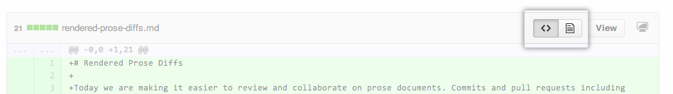

Commits and pull requests that include prose documents have the ability to represent those documents with source and rendered views.
The source view shows the raw text that has been typed, while the rendered view shows how that text would look once it's rendered on GitHub. For example, this might be the difference between showing **bold** in Markdown, and bold in the rendered view.
Prose rendering is supported for rendered documents supported by github/markup:
- Markdown
- AsciiDoc
- Textile
- ReStructuredText
- Rdoc
- Org
- Creole
- MediaWiki
- Pod

When you click the paper icon on the right, you'll also see the changes made to that document as part of a commit.
Visualizing attribute changes
We provide a tooltip describing changes to attributes that, unlike words, would not otherwise be visible in the rendered document. For example, if a link URL changes from one website to another, we'd show a tooltip like this:
Commenting on changes
Commit comments can only be added to files within the source view, on a line-by-line basis.
Linking to headers
As with other rendered prose documents, hovering over a header in your document creates a link icon. You can link readers of your rendered prose diff to specific sections.
Viewing complex diffs
Some pull requests involve a large number of changes with large, complex documents. When the changes take too long to analyze, GitHub can't always produce a rendered view of the changes; you'll see a message similar to this when you click the rendered button:

You can still use the source view to analyze and comment on changes.
Viewing HTML elements
We don't directly support rendered views of commits to HTML documents. Some formats, such as Markdown, let you embed arbitrary HTML in a document. When these documents are shown on GitHub, some of that embedded HTML can be shown in a preview, while some (like an embedded YouTube video) cannot.
In general, rendered views of changes to a document containing embedded HTML will show changes to the elements that are supported in GitHub's view of the document. Changes to documents containing embedded HTML should always be reviewed in both the rendered and source views for completeness.